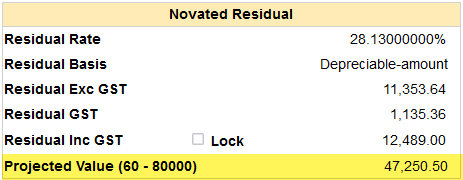

Projected Value
From Help wiki
Main Page → Fleet / Administration / Quotes → Search → Header | Copy | Accept and Settle → Finance → Projected Value
Contents |
Overview
The Quotes / Finance Novated Residual "Projected Value" field will be displayed if this feature is configured. It is a GST inclusive amount.
The amount shown is calculated using the best fit record found in the [qt_variant_residuals] table.
The Months and Kms of the selected record are displayed next to the field name like this (Months - Kms). E.g. (60 - 80000).

Record Selection and Calculation
Open the Novated Residual Projected Value Model file to see the calculation model in detail.
The quote's “Variant ID”, “Term” and “Contract Km” are used to lookup the [qt_variant_residuals] table for a matching record.
If a direct match cannot be found, use the same logic used on the “Look Ahead” feature where it uses ROUNDUP (CEILING) to find the next available Term/Km combination.
The setting in [gb_controls]novated_residual_projected_value_source determines which field is used to calculate "Projected Value".
This can be either average_wholesale, average_retail, good_wholesale or good_retail.
“Projected Value” = [qt_variant_residuals]selected field * (1 + [gb_controls]gst_rate).
Example Quote details
- [gb_controls]novated_residual_projected_value_source = good_wholesale
- [gb_controls]gst_rate = 0.1
- Quotes / Contract "Term (Months)" = 13
- Quotes / Contract Contract Term = 45000
Example record selection logic
- ROUNDUP 13 to next multiple of 12 = 24
- ROUNDUP 45000 to the next multiple of 10000 = 50000
- The 24/50000 record will be used
- [qt_variant_residuals]good_wholesale = 28455
- “Projected Value” = 28455 * (1 + 0.1) = 31300.50
Example [qt_variant_residuals] data

The calculation cannot be done if
- Quotes / Vehicle “New or Used” = ‘Used’, or
- Quotes / Contract Contract Term is greater than maximum [qt_variant_residuals]residual_months
In these cases, the field name displays as “Projected Value” and the amount shows as 0.00.
Set Up
Value Source
Populate [gb_controls]novated_residual_projected_value_source with either: average_wholesale, average_retail, good_wholesale or good_retail.
When [gb_controls]novated_residual_projected_value_source is blank the "Projected Value" row will not be displayed.
Residual Data
If you subscribe to RedBook residual data, this information will be updated in RedBook Scheduler Job updates, otherwise you can create your own records and use Import Table Data to populate this table.
Field Name
The field "Projected Value" can be renamed. The displayed (Term-Kms) will continue to display as described.
For example, if the Screen Alias is 'Expected Future value', then you would see "Expected Future value (24-50000)" as the label.
System Notes
- (DEV-21906) RedBook Data - Additional Variant and Paint fields. Live 02/10/2023

{kind=link}